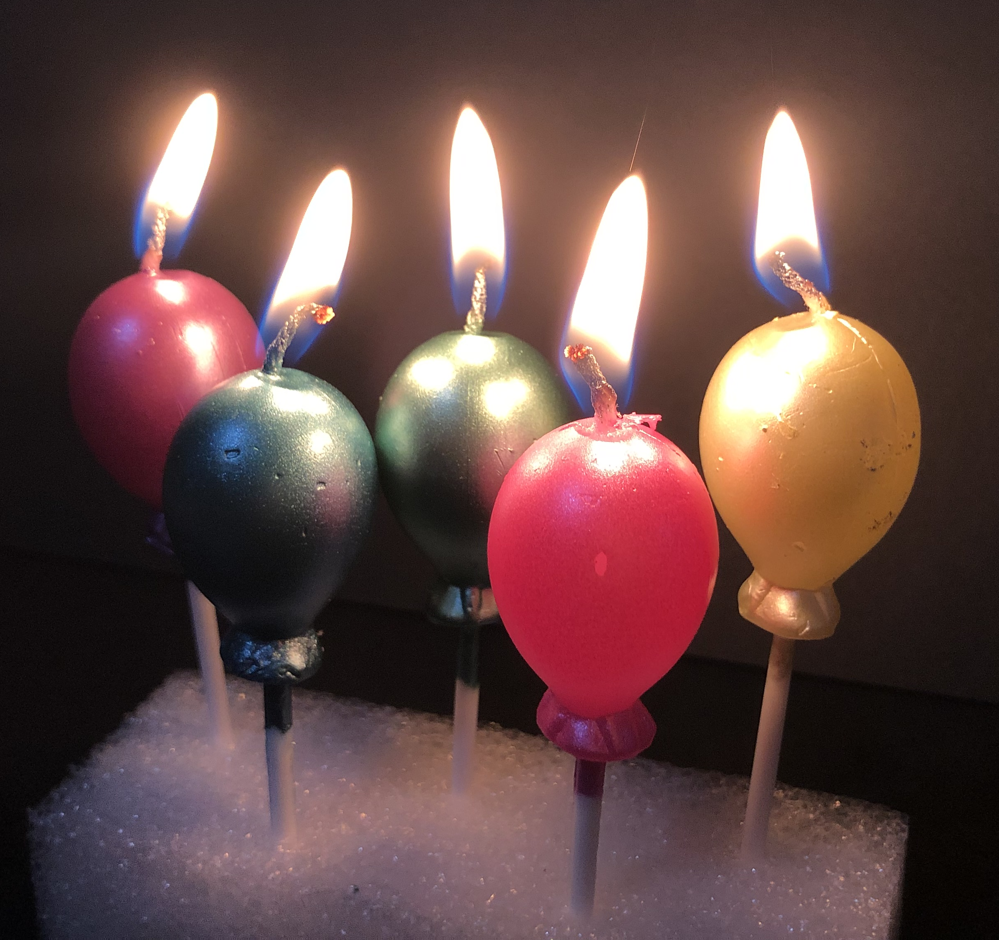

Wishes Upon the Heavens

Candles were burned in for religious ceremonies as blessings for the gods in Ancient Greek. A round cake symbolises the moon and it naturally became a tradition to put candles on top of cakes as tribute to the Moon goddess.
Make a wish
or
No wish